DPoD Quorum
A feature designed to support scalable, secure, and auditable multi-party approval for mission-critical, high-risk operations
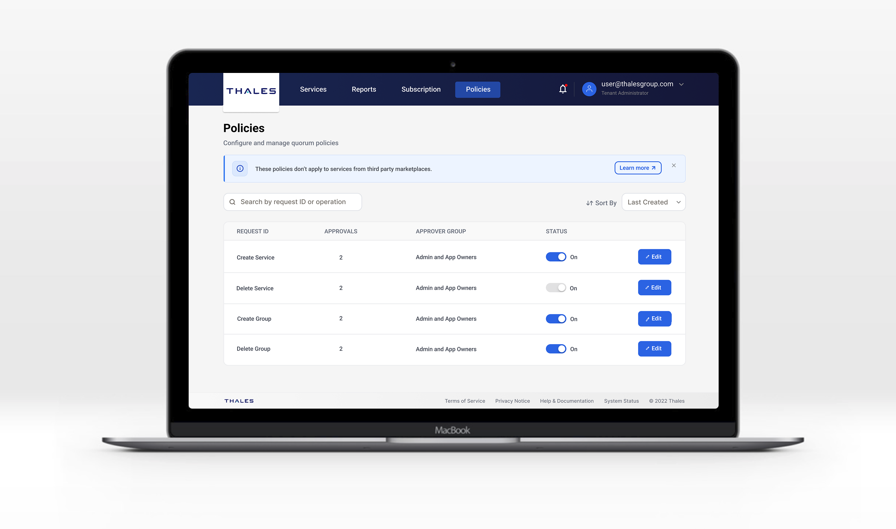
Team
Designers, PMs, Engineers
Tools
Figma, Miro, Figma Make (AI)
Tags
Product Design, AI-Assisted Design, UI/UX
Timeline
12 months - Shipped 2026
INTRODUCTION
Project Overview
DPoD is a cloud-based security platform by Thales that provides cryptographic key management and HSM services for enterprise customers. As the platform scales, it increasingly serves organizations with complex operational and governance requirements, but lacked structured approval workflows for sensitive operations, allowing critical actions to be executed by a single administrator and creating security and accountability risks.
To address this, we introduced a Quorum system that enables multi-party approval for high-risk actions, with the goal of designing a scalable governance mechanism that strengthens security while integrating seamlessly into existing workflows.
HOW IT BEGINS
Problem Statement
As adoption grew, enterprise customers raised concerns about missing governance controls, as high-impact actions such as key operations could be executed without validation or oversight. This created operational risk and limited traceability in distributed environments, where customers expected built-in approval workflows, auditability, and visibility. These insights highlighted the need for a structured system to enforce multi-party decision-making within the product.
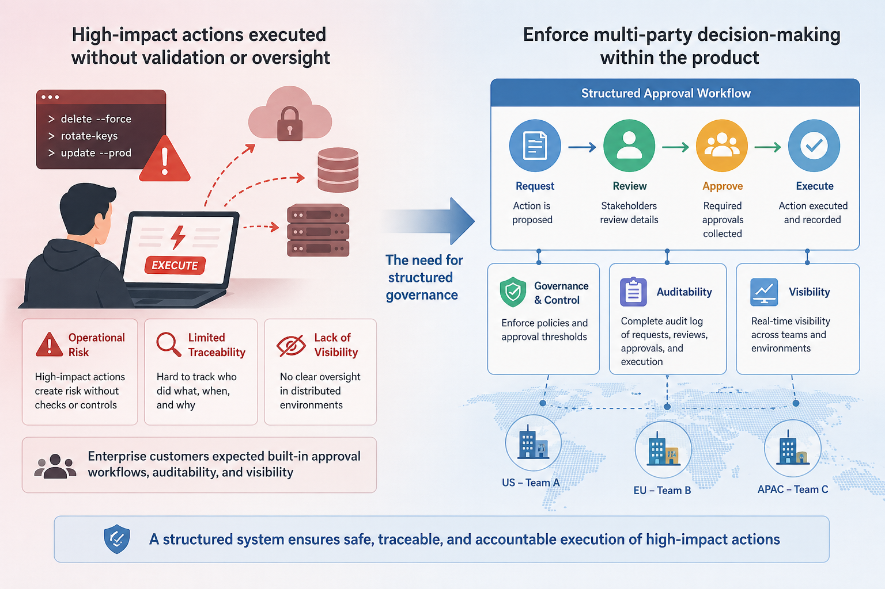
Design challenge
How might we design a quorum-based approval system that ensures secure multi-party authorization while remaining intuitive and seamlessly integrated into existing workflows?
Solution
Quorum was designed as a governance layer embedded within DPoD rather than a standalone feature. I analyzed existing workflows to identify gaps in approval logic and collaborated with PMs and engineers to define quorum rules, triggers, and system feedback. To accelerate exploration, I also used AI-assisted design workflows in Figma Make to generate early concepts and interactions, which were then refined using the DPoD design system to ensure consistency and feasibility.
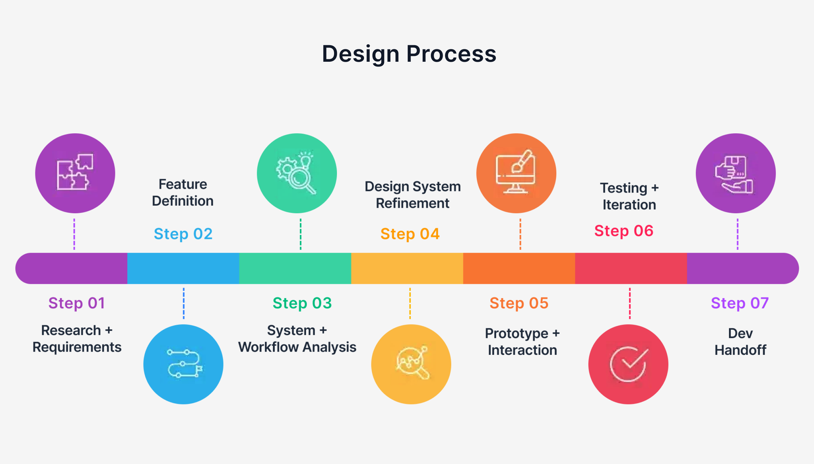
RESEARCH
User Research
This feature was informed by enterprise customer feedback collected by PMs, as well as internal discussions with engineers and stakeholders, where customers consistently highlighted the need for multi-party approval, accountability, and auditability for sensitive actions. Rather than managing approvals externally, they expected these workflows to be built directly into the platform.
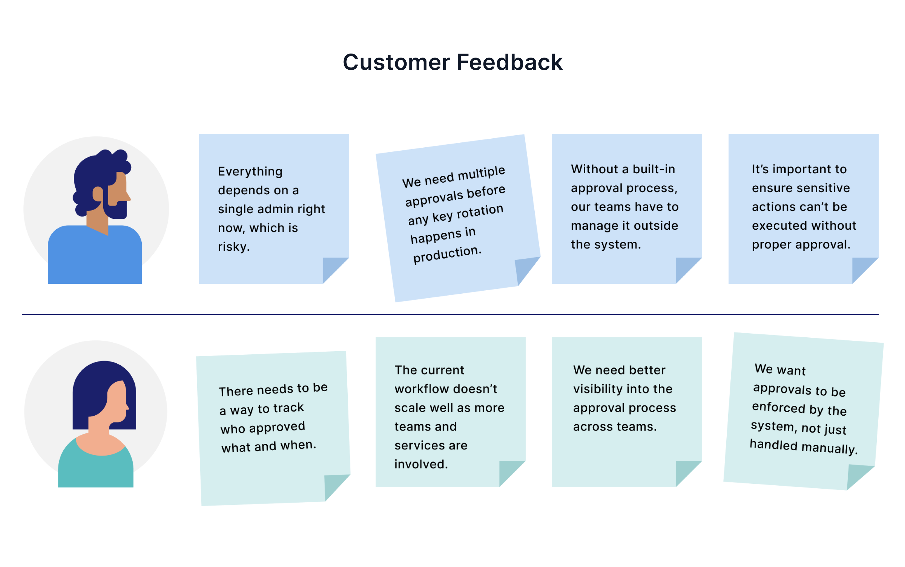
IDEATION
Determining the features
Working with product managers and engineers, we defined how Quorum integrates into the platform through a role-based structure, introducing a structured approval system with clear responsibilities across policy setup, request execution, approval, and system communication to enable scalable governance without adding complexity.
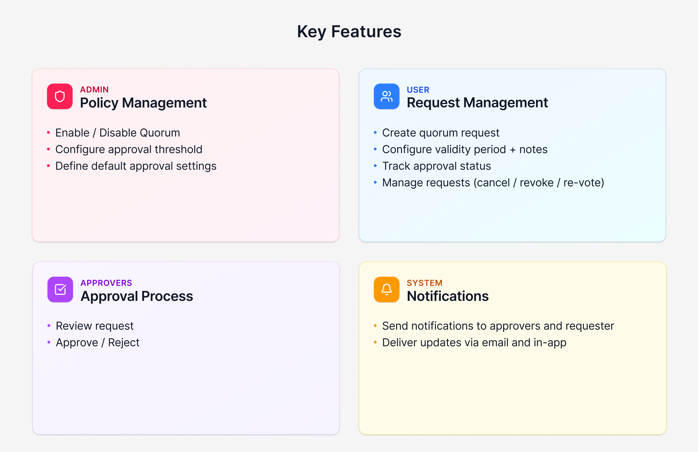
User Flows
Based on the feature set, I mapped key workflows covering the full lifecycle of a protected action, clarifying how decisions are created, reviewed, and executed within the system.
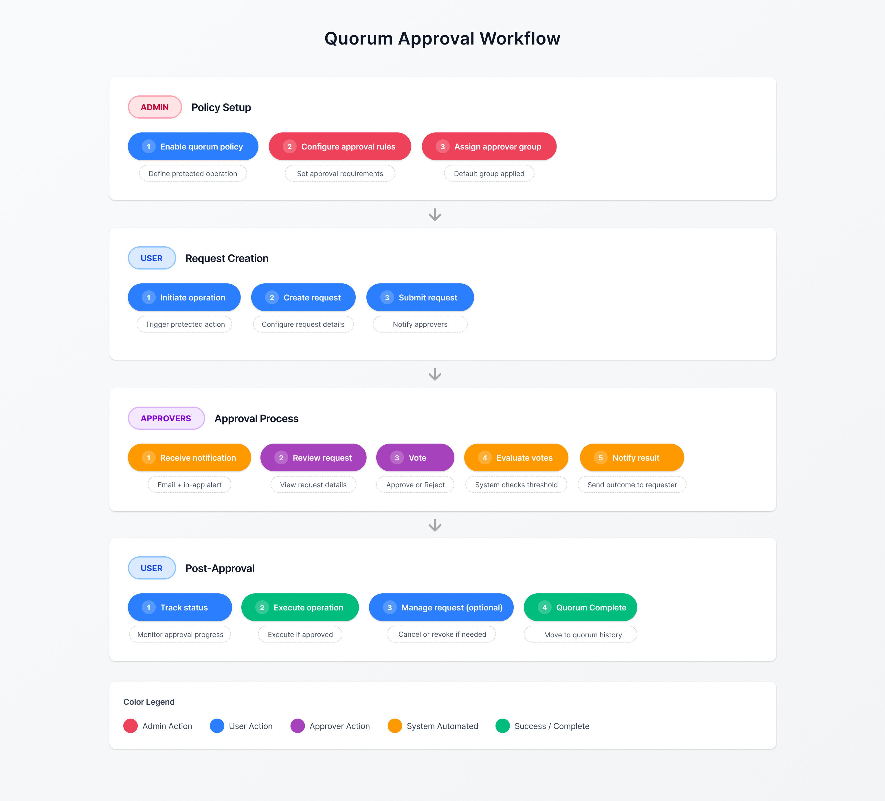
INTERFACE DESIGN
AI-assisted Ideation
To explore interface directions, I used Figma Make with structured prompts based on features and user flows, grounded in the design system, to generate multiple UI variations for approval workflows and dashboards, expanding the design space and providing a starting point for refinement.
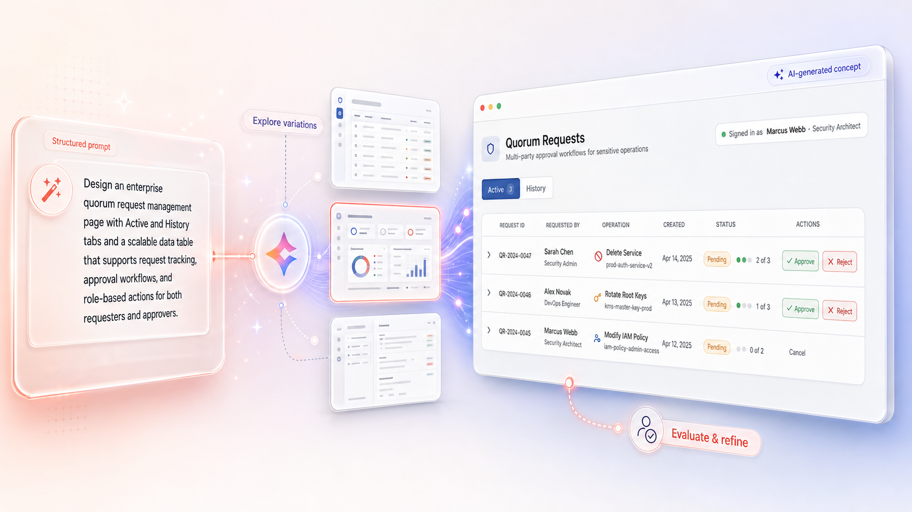
Design System Refinement
AI-generated concepts were refined using the DPoD design system by incorporating design documentation and UI kit patterns to align layouts, standardize components, and match existing interaction behaviors, transforming exploratory ideas into production-ready designs.
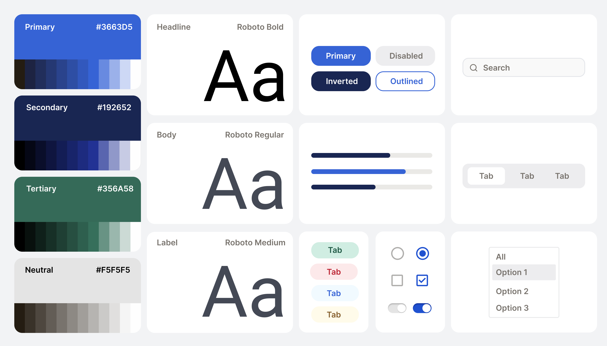
Prototype The Interface
I developed high-fidelity prototypes to define the full quorum workflow, refining layouts, standardizing components, and optimizing interactions for clarity. Using Figma Make, I also generated interactive behaviors to simulate realistic workflows and enable actionable stakeholder feedback.
Core Interfaces：
- Quorum policy configuration
- Create quorum request
- Quorum status dashboard
- Approval history view
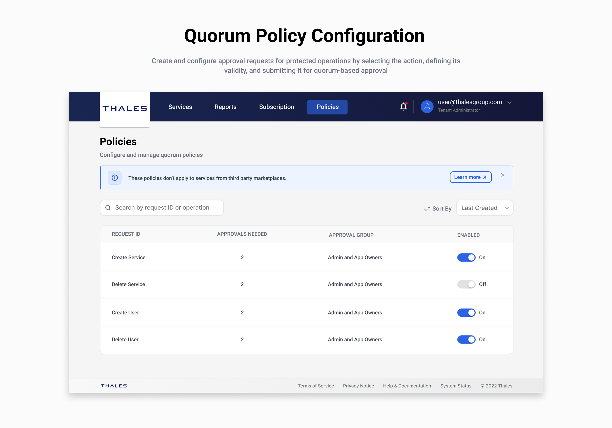
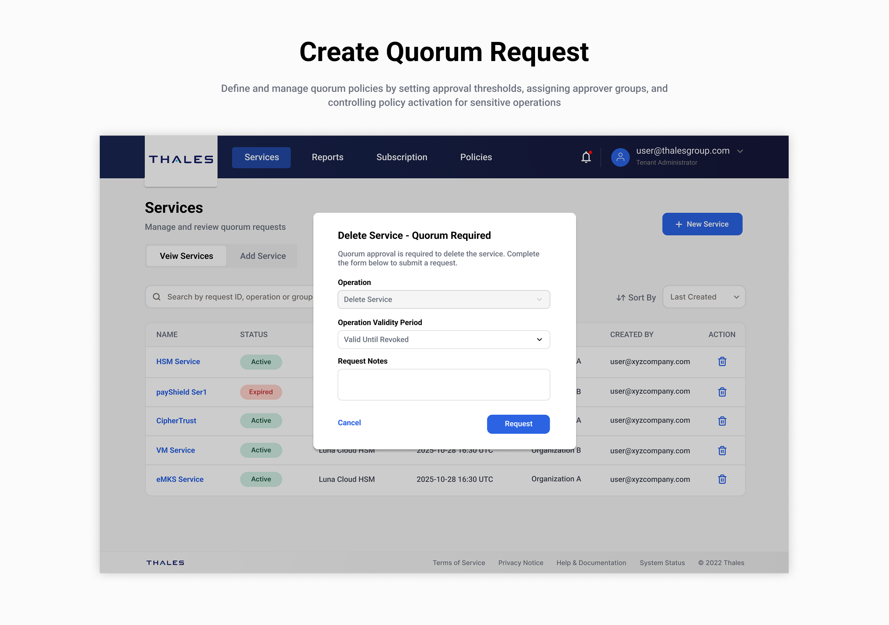
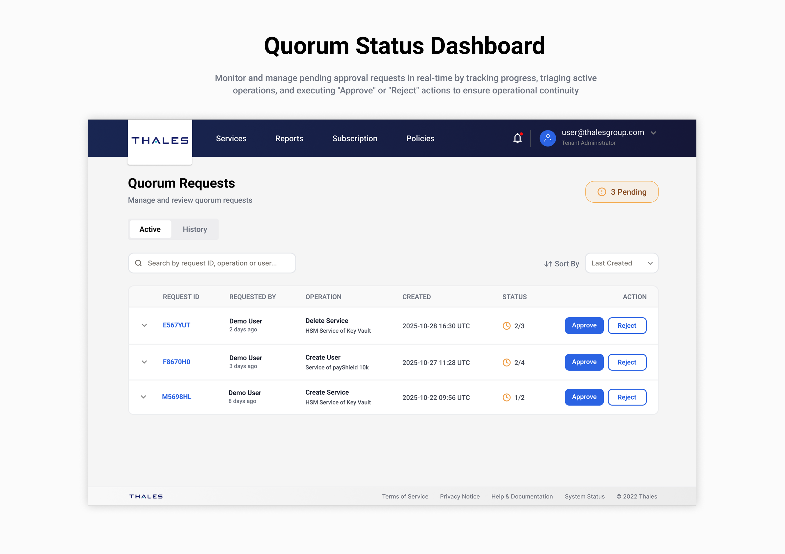
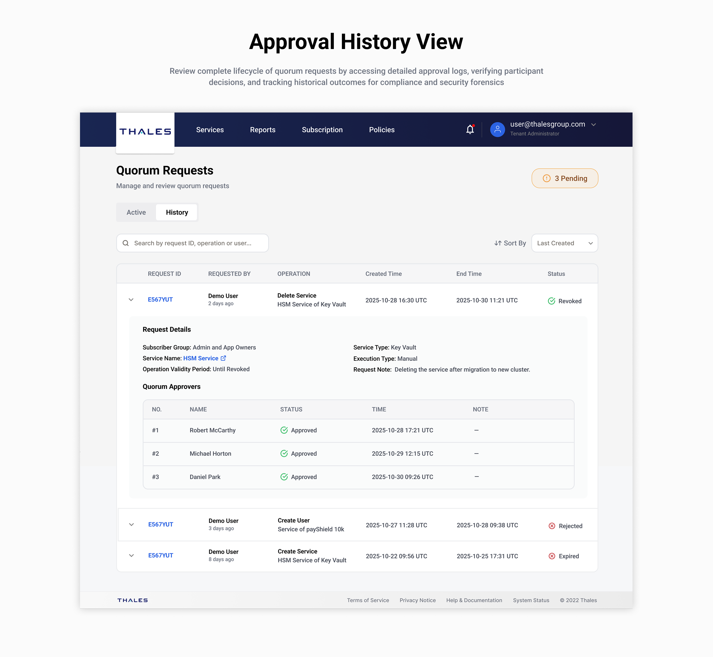
TESTING & ITERATIONS
Usability Testing
Prototypes were tested with PMs, engineers, and selected users in real-world scenarios to validate usability and workflows. Feedback surfaced key gaps in flexibility and clarity:
- Rigid policy settings limited adaptability across use cases
- Approval states were difficult to interpret and lacked clear visibility
In response, I introduced editable policy configurations and more flexible execution options, while refining layouts to better highlight critical information such as approval progress. These iterations improved usability, reduced cognitive load, and enabled more scalable governance workflows.
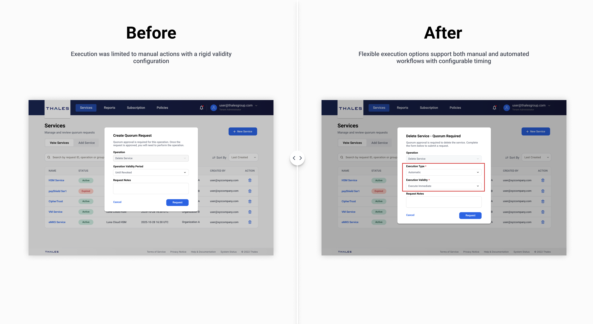
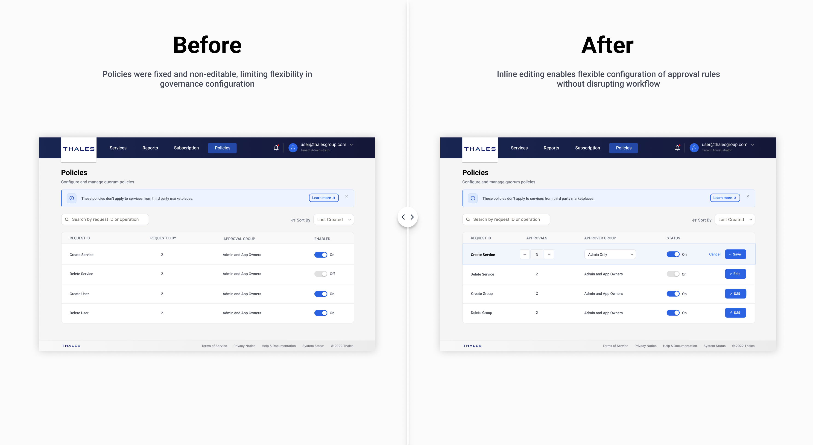
Final Output
The final Quorum system introduces structured approval workflows into DPoD, enabling administrators to define approval rules, track progress in real time, and maintain full audit trails, while seamlessly integrating into existing workflows to improve visibility and governance.
Impact
This project became one of the largest feature initiatives I worked on since joining the company, and I was involved throughout the entire design process—from initial requirement exploration to final delivery. Launched in March 2026, it quickly became a core governance capability within the DPoD platform and received strong positive feedback from enterprise customers, contributing to significant product growth.
It also marked our team’s first integration of AI-assisted design tools into the workflow. Using Figma Make to generate interface concepts, interactive prototypes, and production-ready code accelerated early exploration, improved design–engineering collaboration, and streamlined handoff—reducing implementation time and boosting overall team efficiency, with an estimated about $200M revenue impact in Q1 2026.
Metrics 👀
Currently looking into the data of this new designs. Please come back to this case study at a later date to view!
Thanks for Reading ❤️
If you’d like to hear more about my experience, feel free to send me an email–I’d love to chat ☕.
My Other Projects
If you'd like to see more, check out my other projects below!